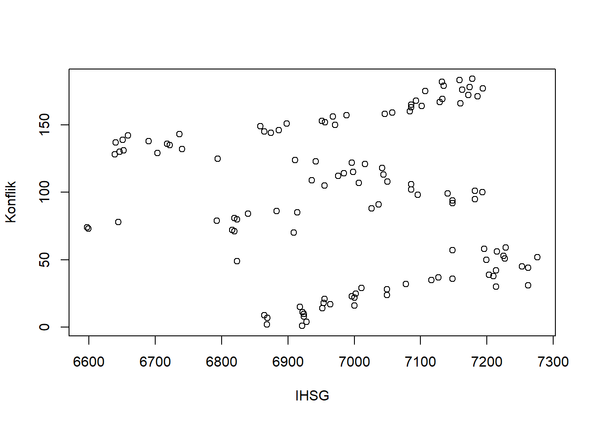
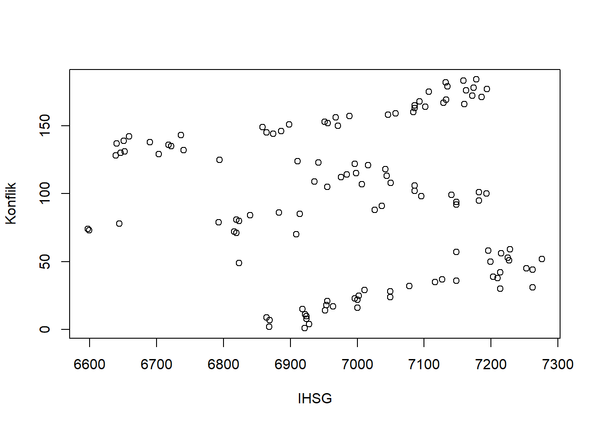

library(readxl)
dat<-read_excel('uas metopel fix.xlsx')
reg1<-lm(Y~X, data=dat)
plot(dat$Y,dat$X, xlab="IHSG",ylab="Konflik")
Metode Penelitian Politeknik APP Jakarta

Rusia mulai melancarkan serangannya ke Ukraina pada 24 Februari 2022 dan pemberian sanksi kepada Rusia pada 27 Februari 2022. Perang ini diprakarsai oleh Presiden Putin karena merasa gagal membujuk Ukraina untuk tetap netral dan tidak bergabung dengan North Atlantic Treaty Organization, atau sering disebut NATO (Kirby, 2022). Rusia tidak hanya ingin bergabung dengan NATO, tetapi juga khawatir untuk bergabung dengan Uni Eropa. Rusia akan terus menyerang negara Ukraina sampai tuntutannya dipenuhi, yaitu agar Ukraina menuliskan netralitas negara Ukraina ke dalam konstitusinya sehingga tidak pernah bergabung dengan NATO. Ukraina yang bergabung dengan NATO dapat menimbulkan ancaman nyata karena Ukraina berada tepat di sebelah Rusia. Rusia mencurigai aliansi NATO sedang membangun pangkalan militer tepat di sebelah negaranya, sehingga dapat membahayakan kedaulatan negaranya. Akibatnya, perusahaan yang dinyatakan sebagai musuh Rusia mencabut izin mereka untuk membuka cabang di Rusia. Perusahaan dengan merek terkenal seperti IKEA, Spotify, H&M, EA Sport, Unilever, Nike, Uniqlo dan lainnya telah melepaskan kerja sama bilateral, membatalkan semua investasi yang dilakukan dan berhenti beroperasi dari Rusia. Selain fakta bahwa banyak negara meninggalkan Rusia, tanggapan lain datang dari menerapan investor di seluruh dunia dalam bentuk perubahan harga saham. Harga saham negara-negara Eropa dan Amerika, serta beberapa negara lain yang dinyatakan sebagai musuh Rusia, bereaksi terhadap peristiwa ini. Jatuh atau naiknya harga saham akibat serangan Rusia ke Ukraina diperkirakan juga akan mempengaruhi pasar saham baik secara langsung maupun tidak langsung baik di negara maju maupun negara berkembang, termasuk Bursa Efek Indonesia (BEI). Pasar saham Indonesia diperkirakan akan terpengaruh karena luasnya cakupan bursa saham negara-negara Eropa dan Amerika serta luasnya cabang perusahaan Indonesia, sehingga judul “Pengaruh Konflik Rusia-Ukraina Terhadap Indeks Harga Saham Gabungan Indonesia” adalah layak untuk diteliti.
Penelitian ini mengambil data dengan subjek Indeks Harga Saham Gabungan (IDX: COMPOSITE) Indonesia. Data ini bersumber dari Bursa Efek Indonesia selama bulan Maret 2022 sampai Agustus 2022, kemudian data ini akan dibandingkan dengan konflik Rusia dan Ukraina.
Bagaimana respon Indeks Harga Saham Gabungan (IHSG) Indonesia terhadap konflik Rusia dan Ukraina?
Untuk mengetahui bagaimana konflik Rusia dan Ukraina dapat memengaruhi Indeks Harga Saham Gabungan (IHSG) Indonesia.
Teori Sinyal (Signaling Theory)
Investor menyerap dan menganalisis informasi untuk mengambil keputusan. Terdapat dua sinyal yang dapat diterima, berita buruk (sinyal buruk) atau kabar baik (sinyal baik). Ketika ada sinyal bagus, maka reaksi pasar tercermin dari perubahan harga saham, karena return saham bisa terjadi ketika harga saham naik (Welley Marchel dkk., 2021). Reaksi lain yang mungkin terjadi adalah keputusan untuk membeli dan menjual saham atau wait and see. Menunggu dan melihat bahwa dampak keputusan tidak baik atau buruk, tetapi dilihat sebagai reaksi investor untuk menghindari risiko yang signifikan dari faktor pasar yang merugikan atau menguntungkan.
Teori Pasar Efisien (Efficient Market Theory)
Harga saham yang terbentuk merupakan refleksi dari seluruh informasi yang ada, baik fundamental ditambah insider information. Menurut Statman (1998), menyatakan bahwa investor tidak dapat mengalahkan return pasar secara sistematis dan harga saham adalah rasional. Teori ini menjelaskan konsep keterkaitan antar harga saham dan informasi. Harga yang terjadi di pasar merupakan cerminan dari informasi yang ada. Di pasar saham, investor yang mempunyai penguasaan informasi melebihi dari yang lainnya akan lebih mampu memprediksi harga saham ke depan dengan lebih baik sehingga bisa mempunyai potensi keuntungan lebih tinggi daripada lainnya. Teori pasar efisien ini ada 3 bentuk, yaitu dalam bentuk lemah, semi kuat, dan kuat.
Dampak dan Sanksi Konflik Rusia-Ukraina Bagi Negara Lain
Pada tanggal 27 Februari 2022 Serangan Rusia ke negara Ukraina yang terus berlanjut hingga menimbulkan perseteruan dengan berbagai negara yang mendukung maupun yang mengecam tindakannya (Ramadhani, 2022). Negara-negara anggota Uni Eropa melarang lewatnya pesawat atau pesawat Rusia yang menuju Rusia melalui negara mereka. Amerika, Inggris, Uni Eropa, Jerman, Italia, Prancis, Australia, Jepang, dan Korea Selatan adalah negara-negara yang mengkritik langkah-langkah yang diambil sebagai pelanggaran hak asasi manusia dan kemanusiaan di dunia. Perusahaan dunia dengan cepat mulai bereaksi terhadap berita ini, misalnya kekhawatiran Amerika Ford menghentikan produksi di pabrik negara Rusia, dan Toyota Jepang juga berhenti mengekspor mobil ke Rusia untuk memutus rantai pasokan. Banyak media sosial lain seperti Apple, Meta, Twitter, Netflix, Youtube juga setuju memblokir hal-hal yang digunakan oleh pemerintah Rusia dan menghapus akun yang dibuat oleh negara Rusia untuk perusahaannya.
Penelitian dilakukan dengan pendekatan kuantitatif dengan menggunakan R sebagai alat bantu pengolahan data. Populasi dari penelitian ini adalah semua perusahaan yang tergolong dalam kelompok indeks saham COMPOSITE yang sudah terdaftar di Bursa Efek Indonesia (BEI) 2022, dengan menggunakan model regresi univariat atau Ordinary Least Square (OLS) dengan 1 variabel independent. Packages yang digunakan dalam penelitian adalah library(tidyverse), library(readxl) dan library(WDI). Sumber data pada penelitian ini ialah data sekunder yang pengumpulan data dengan cara tidak langsung, seperti melalui media perantara atau data dalam bentuk dokumen. Pada penelitian ini peristiwa awal perang Ukraina-Rusia menjadi variabel independen, sedangkan indeks harga saham gabungan menjadi variabel dependen.

penelitian ini menggunakan data IDX: COMPOSITE yang bersumber dari Bursa Efek Indonesia (BEI) selama bulan Maret sampai Agustus tahun 2022.
library(readxl)
dat<-read_excel('uas metopel fix.xlsx')
reg1<-lm(Y~X, data=dat)
plot(dat$Y,dat$X, xlab="IHSG",ylab="Konflik")
Metode yang dipilih adalah regresi univariat atau Ordinary Least Square (OLS) dengan 1 variabel independen. Penelitian ini bermaksud mencari hubungan antara Indeks Harga Saham Gabungan dan konflik Rusia-Ukraina. Spesifikasi yang dilakukan adalah:
\[ y_t=β_0+β_1 x_t+μ_t \]di mana y_t adalah Indeks Harga Saham Gabungan (IHSG), β_0 adalah koefisien konstanta, β_1 sebagai parameter, x_t adalah hari konflik rusia-ukraina dan μ_t sebagai error term
| Variable | Coefficient | std. error | t-value | Prob |
|---|---|---|---|---|
| Intercept | 7006.3013 | 32.0108 | 218.873 | <2e-16 *** |
| X | -0.1443 | 0.2909 | -0.496 | 0.621 |
| R-Squared | 0.002098 | |||
| Adjusted R-Squared | -0.006431 | |||
| F-Statistic | 0.246 | |||
| Prob(F-Statistic) | 0.6208 |
Apabila dilihat dari hasil tabel di atas, konflik rusia-ukraina berpengaruh terhadap respon pergerakan Indeks Harga Saham Gabungan (IHSG) namun tidak signifikan. Ditunjukan dari probilitas X. Data pada tabel menunjukan pada setiap konflik Rusia-Ukraina bertambah satu hari maka Indeks Harga Saham Gabungan (IHSG) bertambah Rp 0.2909. Dengan hasil ini, berarti konflik Rusia-Ukraina berpengaruh positif terhadap respon Indeks Harga Saham Gabungan (IHSG).
Hasil regresinya adalah:
library(readxl)
dat<-read_excel('uas metopel fix.xlsx')
reg1<-lm(Y~X, data=dat)
summary(reg1)
Call:
lm(formula = Y ~ X, data = dat)
Residuals:
Min 1Q Median 3Q Max
-398.6 -105.1 7.3 150.5 277.2
Coefficients:
Estimate Std. Error t value Pr(>|t|)
(Intercept) 7006.3013 32.0108 218.873 <2e-16 ***
X -0.1443 0.2909 -0.496 0.621
---
Signif. codes: 0 '***' 0.001 '**' 0.01 '*' 0.05 '.' 0.1 ' ' 1
Residual standard error: 174.1 on 117 degrees of freedom
Multiple R-squared: 0.002098, Adjusted R-squared: -0.006431
F-statistic: 0.246 on 1 and 117 DF, p-value: 0.6208Melihat hasil yang berpengaruh namun tidak signifikan, mungkin terdapat kesalahan pada data variabel X yang didapat.
Kesimpulan yang dapat ditarik dari penelitian ini adalah bahwa konflik Rusia dan Ukraina memiliki pengaruh yang positif terdahap respon pergerakan Indeks Harga Saham Gabungan (IHSG) di Indonesia. Semakin bertambah hari konflik Rusia, maka Indeks Harga Saham Gabungan (IHSG) akan bertambah pula namun dengan pertambahan yang tidak signifikan. Saran bagi penulis adalah dengan mencari indikator konflik Rusia-Ukraina dengan data lain (selain menggunakan satuan hari) agar mendapatkan data yang mungkin lebih signifikan.
Apriyadi, M. H., Kusuma, D. T., Az-Zahra, S., & Siregar, B. (2022). REAKSI PASAR MODAL INDONESIA TERHADAP PERISTIWA PERANG RUSIA DAN UKRAINA. Jurnal Ilmiah MEA (Manajemen, Ekonomi, & Akuntansi), 6(3), Art. 3. https://doi.org/10.31955/mea.v6i3.2258
Ariyanti, H. (2022, Maret 15). Daftar Brand Internasional Setop Beroperasi dan Hengkang dari Rusia Gara-Gara Perang. Merdeka.com. https://www.merdeka.com/dunia/ini-daftar-brand-internasional-yang-setop-beroperasi-amp-hengkang-dari-rusia.html
Bakrie, C. R., Delanova, M. O., & Yani, Y. M. (2022). PENGARUH PERANG RUSIA DAN UKRAINA TERHADAP PEREKONOMIAN NEGARA KAWASAN ASIA TENGGARA. Caraka Prabu : Jurnal Ilmu Pemerintahan, 6(1), Art. 1. https://doi.org/10.36859/jcp.v6i1.1019
Kirby, P. (2022, Februari 24). Perang Ukraina: Apa yang diinginkan Putin dari Ukraina untuk mengakhiri perang? - BBC News Indonesia. https://www.bbc.com/indonesia/dunia-60507911
PT Bursa Efek Indonesia. (2023). IKHTISAR PASAR: COMPOSITE. Diambil 19 Januari 2023, dari https://idx.co.id/
Ramadhani, P. E. (2022, Maret 3). Kecam Invasi ke Ukraina, Ini Deretan Perusahaan Global Hengkang dari Rusia. liputan6.com. https://www.liputan6.com/saham/read/4902204/kecam-invasi-ke-ukraina-ini-deretan-perusahaan-global-hengkang-dari-rusia
Welley Marchel, M., Oroh, F., & Walangitan, M. D. (2021). PERBANDINGAN HARGA SAHAM PERUSAHAAN FARMASI BUMN SEBELUM DAN SESUDAH PENGEMBANGAN VAKSIN VIRUS CORONA (COVID-19) | JMBI UNSRAT (Jurnal Ilmiah Manajemen Bisnis dan Inovasi Universitas Sam Ratulangi). https://ejournal.unsrat.ac.id/index.php/jmbi/article/view/31514